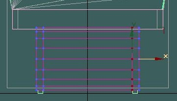
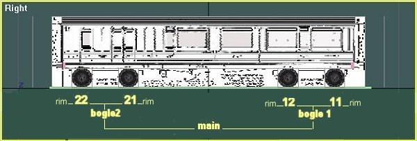
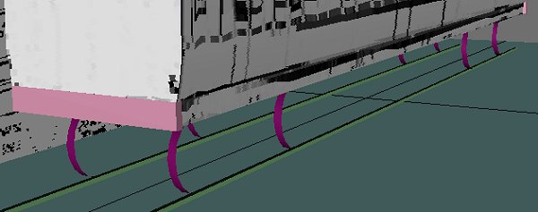
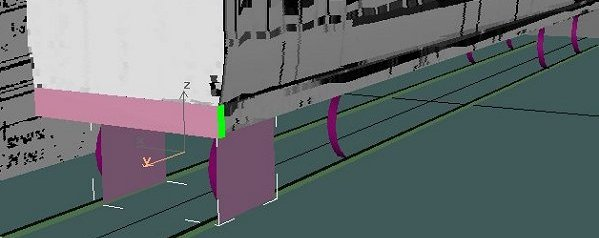
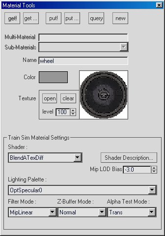
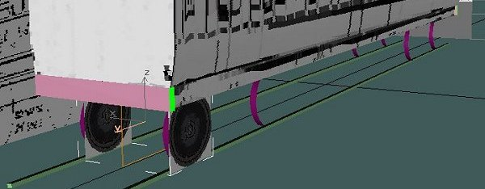
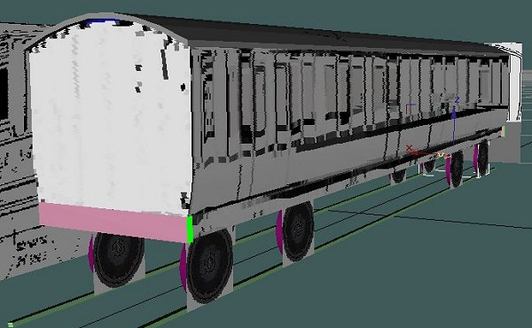
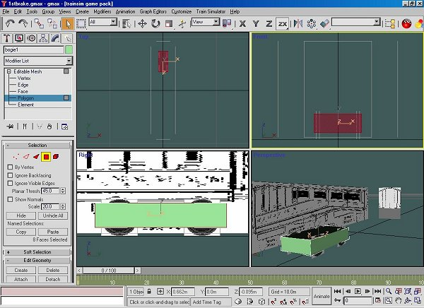
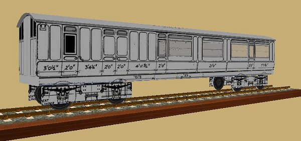

A Coach Made With GMax
by Richard Osborne
Chapter 7: Wheels And Bogies
We're going to be using transparent parts for these. Before you start building go back to your plan & convert bogie wheelbase, centres & consequently wheel spacing. You'll need to half the bogie centres, we'll be working +/- the centreline.
Another slight diversion, we'll make some rails. Just a box, set the inside face to gauge, make the top 0.058m high, the outer face 0.8m. The height has no logic but it seems to work with fine scale track. The default track is too high, to work with default track make the figure nearer 0.08m; too high & your coach will be flying. Set the X pivot to 0, clone & flip with the 2 triangle "Mirror Selected Object" icon. Join both rails & name it. You'll be able to use this in future projects.
Now grab all the other parts, including the calibration box & lift them by the rail height. Reset the "main" part to 0.
We can start the wheels with the rims. Remember to alter the axes of all parts to 0, 0, 0. I'm not completely sure how important this is , it's imperative for "main", "bogie" & "wheelsxx" parts. Make a cylinder from the "Standard Primitives" panel. You might try making it from keyboard entries if you're feeling brave. The wheels need to be 3'6" diameter, standard for British stock. We need 3 sections & 16 sides. Centre the cylinder, lift it to just touch rail height. Move it to the wheels11 position, note down the Y & Z figures. "Editable Mesh" "point mode" move the outer faces just outside the rails, the inner lines of points just inside. "Polygon mode" delete the centre & end face polygons, leaving a pair of rims.

Note the next diagram; I've used the right view as it's the view used by TSM. In right view the hierarchy is from right to left.

We need wheel rims & faces, they could remain as seperate parts or be joined as a unit. For the moment we'll leave them seperate; it doesn't matter if you call the rims "wheels11" & the faces "11face" or call the faces "wheels11" & the rims "11rim". For this tutorial the screen shots might not match. Notice it's wheels11 not wheel11, Gmax doesn't give the list of MSTS names that you have in TSM.
Clone "wheels11", rename it "wheels22" & change the Y value negative, (6.5m to -6.5m). Clone "wheels11" again, call it "wheels12" & move it to position. Clone "wheels12", rename "wheels21" & mirror. You should now have 4 rims in the right position. We could have textured them first, of course.

We need faces for the wheels. Make a square section box, you already have the diameter of the rims & the positions. Drag the outer faces to the outside of the rims. Delete the centre polygons, leaving only the outer faces. Clone, move to the insides of the rims then flip. You'll now have 4 faces in the right place.

I could have the wheel texture on the main texture file. I think, however, that wobbly wheels are the most amateur of errors. You have to be most careful when mapping to avoid mistakes. Use this method to avoid them. I have a wheel texture file just 64 * 64, big enough to show a bit of texture, small enough not to slow the computer. If we put square texture onto a square it has to run true.

Notice this time we want fully transparent texture; the "Alpha Test Mode" now shows "Trans". Apply the texture & "Fit". The transparency doesn't show in Gmax, as in TSM. You'll have to wait until you see it in SView.

Clone the faces in the same way, to the same positions as the rims. The texturing has been carried with the cloned parts.

I might add axles, it depends how empty the bogies look. They'd be cylinders, 8 faces on the same axes as the wheels. I could have made the axles & joined them to the wheels before cloning. More efficient but less of a voyage of discovery. Don't be tempted to use the centre rim polygons, a bit of maths shows they'd add 64 polygons per coach.
As bogies were mentioned we'd better make one. You'll have guessed it's just a transparent box;- box, to rough size & position, delete centre polygons, clone, slightly inside, flip, join & name "bogie1". Centre the bogie axis, set it to 0 in X, use your converter for the Y axis position, move it up to the drawing. You'll have to do some final shaping in "Point Mode". If you have a hard copy of your plan it helps at times like these. If you have dimensions use them rather than the calibration box, less chance for error. You can add endplates & details later.

We'll need a transparent texture. The settings the same as the wheel face texture, this time using the main texture file. Map the file on the bogie using UVW tools as before. Don't try to cut corners in texturing & don't forget to "Collapse All" after EACH part. When you're satisfied, clone, name "bogie2", mirror in Y. If you decide to put more detail on the bogies you'll find it easier to detail bogie1, rename bogie2, clone bogie1 to bogie2. This way you have the original bogie2 - unlink it!. It saves time avoiding duplication.
Before you save this time set the animation. Just by the screen controls on the bottom right you'll see an icon with a clockface & square, this is "Time Configuration". Click & on the screen find the "Animation" "Frame Rate". Set this to 9, the "Length" will change to 8. You'll also see the animation bar has changed from 1/100 to 1/8. You won't need to alter anything else in this screen, other controls are useful for animating valvegear etc.
A bit of linking now, we won't be able to test the rotations until we see the coach in MSTS. Refer back to the hierarchy diagram.
Bogie1 & Bogie2 will be linked to "main"
"wheels11" & "wheels12" will be linked to "bogie1"
"wheels21" & "wheels22" will be linked to "bogie2"
"wheel11rim" will be linked to "wheels11" etc.

The screenshot was taken before I extended the alpha texture to the bogie. I've also added bufferbeams. MSTS looks for parts called "wheels11" etc. to animate; parts associated with them can be named anything. Logic tells me that the order of wheels ought to be 11, in front of the bogie centre; 12 on the bogie centre; 13 should be behind the bogie centre. Wheels11 & wheels12 works OK though.
Some people have very involved hierarchies, I've found that everything other than wheels can be linked to "main".
We still need insides but I think another beer is called for first. If you've got this far in a long evening you've done well. With practice you'll be far quicker.